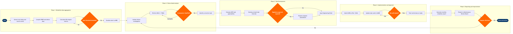

| Step | L4 Step Name | KPI / Target | Pain Point / Risk | Gate |
|---|---|---|---|---|
| 1.1 | Extract technical delay & cancellation events | Technical dispatch reliability ≥99.0% (IATA target) | AMOS data quality degrades at outstations using paper-based PIREP capture; electronic sync lags up to 24 hours, distorting daily reliability figures | |
| 1.2 | Compile PIREP and cabin defect report data | Repeat defect rate <2% per ATA chapter per month | Inconsistent ATA chapter coding across maintenance bases causes mis-classification; repeat defects counted under different chapters, masking true recurrence rates | |
| 1.3 | Calculate ATA chapter reliability metrics | Alert threshold: >3 events / 1,000 flight hours per ATA chapter triggers review | Manual data extraction from AMOS via CSV export introduces processing lag of 2–3 days; no real-time API feed from AMOS to BI platform | |
| 1.4 | Assess alert threshold breach and escalate | 100% of threshold breaches assessed within 2 business days of month-end data close | Alert threshold logic embedded in legacy spreadsheets not integrated with AMOS or Redshift; threshold parameters updated manually and inconsistently across fleet types | ⚠ |
| 2.1 | Initiate formal failure investigation record | 100% of Level 1 alert items investigated within 5 business days of alert | Insufficient root cause data available when aircraft operated at remote outstations; maintenance findings not captured in AMOS before aircraft repositions | |
| 2.2 | Perform MSG-3 logic and FMEA assessment | FMEA completed for 100% of Level 1 alert items within investigation SLA | Boeing Toolbox concurrent-user licence constraints limit simultaneous FMEA sessions; engineers queue for access during peak investigation periods, extending cycle time | |
| 2.3 | Classify failure consequence category | 100% classification accuracy validated by MRB at monthly review | Safety consequences misclassified as operational when CAMP airworthiness data is stale due to deferred AD entry; classification errors trigger rework and regulatory exposure | ⚠ |
| 2.4 | Identify and document corrective task recommendation | Recommendation issued within 10 business days of alert escalation | OEM (Boeing/Airbus) response SLA for MPD revision guidance averages 45 days, creating a backlog of open recommendations awaiting OEM concurrence before implementation | |
| 3.1 | Evaluate existing MPD task applicability | Task revision scope defined within 5 business days of recommendation receipt | Mixed 737-700/800/MAX fleet requires parallel MPD analysis tracks; task applicability differs by line number and engine variant, increasing analysis effort by 30–40% | |
| 3.2 | Develop revised maintenance task intervals | Interval extension justified at ≥95% statistical confidence using Weibull analysis | Small fleet sample size for 737 MAX subtype (<50 aircraft in some configurations) limits Weibull confidence; task intervals set conservatively, missing potential cost optimisation | |
| 3.3 | Assess regulatory change approval requirement | 100% of safety-consequence task changes submitted for FAA/EASA regulatory review | Ambiguity in FAR 121.370 on what constitutes a 'significant' maintenance program change requires legal review for borderline cases, adding 5–10 days to the cycle | ⚠ |
| 3.4 | Issue Engineering Order or Maintenance Program Amendment | Engineering Order issued within 15 business days of task approval | Concurrent EO backlog regularly exceeds 60 open items; engineering resource constraint delays issuance and causes task cards to remain at superseded intervals in production | |
| 4.1 | Submit MPA to FAA FSDO or EASA for approval | FAA approval turnaround ≤90 days for non-safety items per FAR 121.370 | FAA FSDO staffing shortages in 2024–2025 causing MPA approval delays beyond 120 days for complex amendments; aircraft continue operating on superseded intervals during review | |
| 4.2 | Update approved task cards in AMOS | 100% task card accuracy post-update verified by QA within 48 hours of activation | Manual task card entry in AMOS prone to interval transcription errors (confusing FH vs FC vs calendar values); errors not caught until next scheduled QA audit cycle | |
| 4.3 | Validate task card update accuracy via QA audit | Zero task card interval discrepancies at post-update audit; 100% of failed audits remediated within 5 days | QA audit sampling rate of 10% for low-risk task revisions may miss low-frequency task card errors on infrequently performed tasks until first work-order execution | ⚠ |
| 4.4 | Train maintenance technicians on revised tasks | 100% technician training completion within 30 days of task implementation | SAP SuccessFactors LMS is not integrated with the AMOS task library; training content must be manually synced, leading to version mismatches between LMS materials and live task cards | |
| 5.1 | Generate monthly reliability performance report | Report published within 5 business days of month-end data close | Manual consolidation of AMOS export and ops data in spreadsheets creates version control risk; no automated pipeline from AMOS to Tableau, requiring 2–3 days of analyst effort per cycle | |
| 5.2 | Present findings to Maintenance Review Board | 100% of open MRB action items tracked to closure within agreed timescales; MRB held monthly | MRB meeting cadence slips during heavy maintenance check periods; unresolved reliability actions go untracked for up to 60 days, breaching IATA Maintenance Review Board guidelines | |
| 5.3 | Assess corrective action effectiveness and close investigation | Recurrence rate <5% within 90 days of corrective action implementation | Corrective action effectiveness undermined when task changes are not adopted uniformly across all maintenance bases; partial implementation creates split-fleet reliability data that masks recurrence | ⚠ |